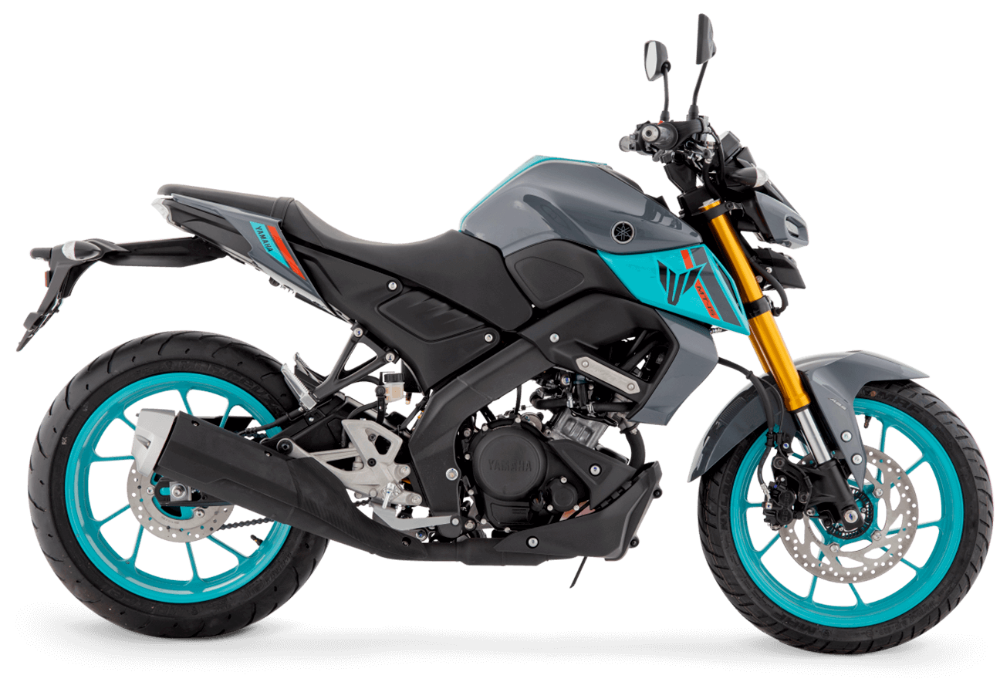

El espíritu naked MT al alcance de Pereira. Diseño agresivo, motor VVA y actitud deportiva pura para estrenar la calle.
Precio sugerido
$15.500.000*
*Precio sugerido. No incluye trámites

Variable Valve Actuation para más potencia y eficiencia en cada rango de revoluciones.
Herencia de la saga Masters of Torque con líneas agresivas y presencia imponente.
Rigidez y agilidad para una conducción precisa y confiable en cualquier situación.
Faros bi-LED con DRL para máxima visibilidad y un estilo futurista inconfundible.
Respaldo total de fábrica con técnicos certificados directamente por Yamaha Japón.
Más de 20 años liderando el mercado en Pereira con transparencia y honestidad.
Equipos de diagnóstico de última generación y repuestos originales Yamaha.
"Mi MT-15 es perfecta para la ciudad. Potente, ágil y con un diseño que enamora."
Nuestros asesores expertos están listos para guiarte en tu proceso de compra y opciones de financiamiento.